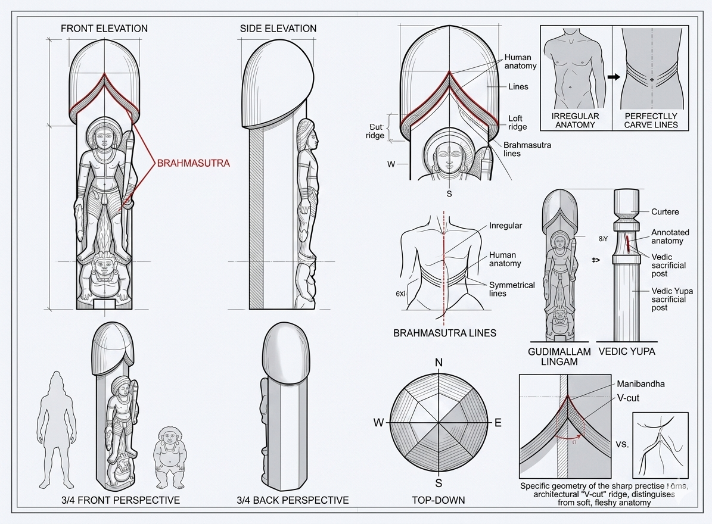
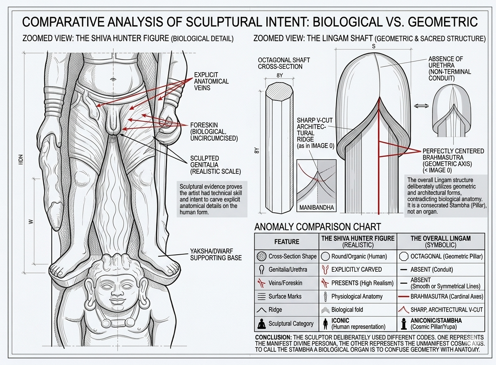
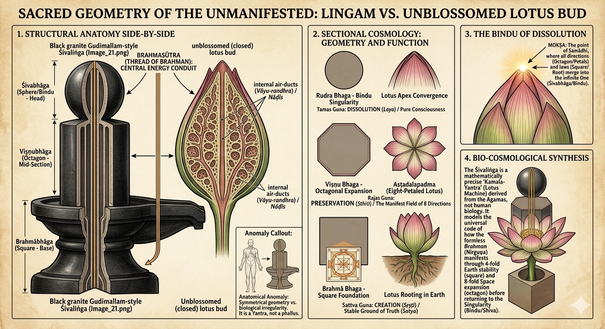
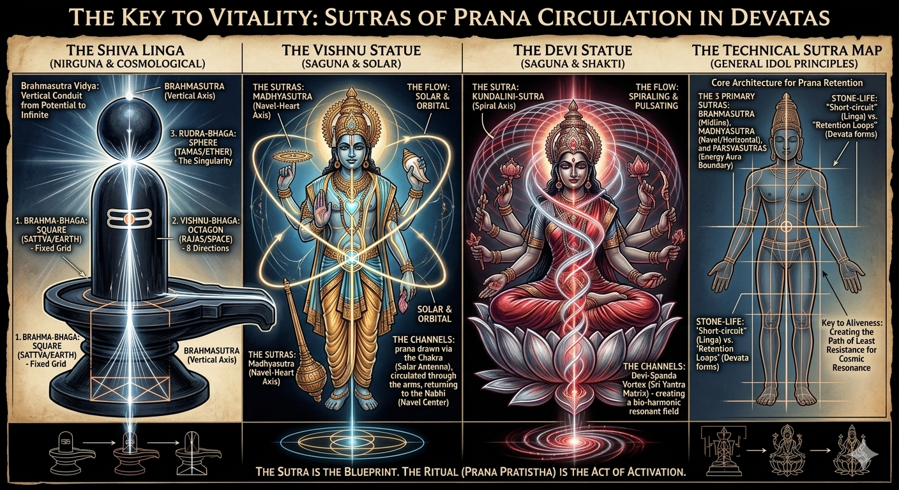
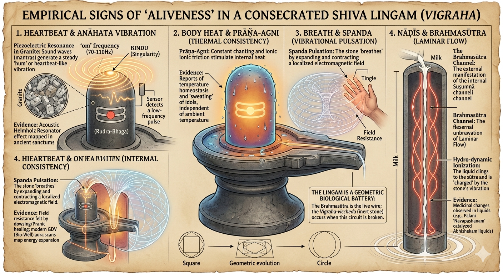

అధ్యాయం 10: గుడిమల్లం లింగం - పవిత్ర జ్యామితి, అంగ నిర్మాణం కాదు¶
జీవశాస్త్రం, అంగ నిర్మాణం మరియు ఆగమ ప్రమాణాలతో మిషనరీ వక్రీకరణను ధ్వంసం చేయడం
📌 పరిచయం: మిషనరీ వాదన¶
పాశ్చాత్య పండితులు మరియు క్రైస్తవ మిషనరీలు గుడిమల్లం లింగాన్ని (క్రీ.పూ 2వ శతాబ్దం, ఆంధ్రప్రదేశ్) లింగం "జననేంద్రియ చిహ్నం" అని "రుజువు" అని చెబుతారు.
వారి వాదన: "గుడిమల్లం లింగం స్పష్టంగా పురుష జననేంద్రియం ఎందుకంటే దాని స్తంభాకారం."
మా సమాధానం: ఈ అధ్యాయం ఈ వాదనను 8 హత్యాత్మక రుజువులతో నాశనం చేస్తుంది:
- ✅ జీవ శాస్త్ర అంగ నిర్మాణం (వాస్తవ అవయవం ఎలా ఉంటుంది)
- ✅ స్మోకింగ్ గన్ (అదే రాయిపై శివుని వాస్తవ అవయవం చెక్కబడింది)
- ✅ అష్టకోణ చెక్మేట్ (8-వైపుల క్రాస్-సెక్షన్ - జీవశాస్త్రంలో అసాధ్యం!)
- ✅ యోని లోపం (పీఠం లేకుండా లింగం - "లైంగిక సంయోగం" వాదనను ధ్వంసం చేస్తుంది)
- ✅ పద్మ బ్లూప్రింట్ (నాలుగు ఆగమ శ్లోకాలు - కమల శరీర నిర్మాణ ఆధారం స్పష్టం చేస్తాయి)
- ✅ సూత్ర సాంకేతికత (వివిధ దేవతలకు భిన్న ప్రాణ నిర్మాణాలు)
- ✅ భౌతిక శాస్త్ర రుజువు (లింగంలో జీవితానికి నాలుగు కొలవగల సంఘటనలు)
- ✅ జ్యామితి vs అంగనిర్మాణం సారాంశం
🔥 రుజువు 1: జీవ శాస్త్ర అంగ నిర్మాణ ఖండన¶
చిత్రాలు - స్పష్టమైన రుజువు¶

చిత్రం 1: గుడిమల్లం లింగం (19వ శతాబ్దపు ప్రతిరూపం). గమనించండి: స్తంభాకార పిల్లర్, శివుని చెక్కిన ఆకృతి, మరియు శివుడి యొక్క వాస్తవ అవయవం (లింగం ఆకారానికి పూర్తిగా భిన్నమైనది)!

చిత్రం 2: వివరణాత్మక దృష్టాంతం - శివ వేటగాడి ఆకృతి యొక్క వాస్తవిక మానవ అంగనిర్మాణం (జననేంద్రియాలతో) vs లింగం యొక్క నైరూప్య జ్యామితీయ రూపం.

చిత్రం 3: సమీప దృశ్యం - ఎడమవైపు శివుని ఆకృతి యొక్క అంగ నిర్మాణ వాస్తవిక అవయవం, కుడివైపు పూర్ణ జ్యామితీయ లింగం నిర్మాణం. శిల్పి వాస్తవిక అంగ నిర్మాణాన్ని చెక్కే నైపుణ్యం కలిగి ఉండినప్పటికీ లింగం కోసం జ్యామితీయ నైరూప్యతను ఉద్దేశపూర్వకంగా ఎంచుకున్నాడు!
అంగ నిర్మాణ పోలిక: 0/10 లక్షణాలు సరిపోలుతున్నాయి!¶
| లక్షణం | సహజ పురుష అవయవం | గుడిమల్లం లింగం | సరిపోలుతుందా? |
|---|---|---|---|
| తల భాగం (గ్లాన్స్) | బల్బస్, మష్రూమ్ ఆకారం, స్పష్ట కొరోనా | నునుపైన గుండ్రని గోపురం (కొరోనా లేదు) | ❌ కాదు |
| ముందు చర్మం | కనిపించే ముందు చర్మం | ముందు చర్మం లేదు | ❌ కాదు |
| కొరోనా శిఖరం | ప్రముఖ శిఖరం | శిఖరం లేదు - నునుపైన మార్పు | ❌ కాదు |
| కాండం | కొంచెం సన్నబడినది, నాళాలతో | పరిపూర్ణ స్తంభం, నాళాలు లేవు | ❌ కాదు |
| మూత్ర విద్రము | కొనపై కనిపించే చీలిక | విద్రము లేదు - దృఢమైన గోపురం | ❌ కాదు |
| వైశాల్యం | చర్మ వైశాల్యం, ముడతలు | నునుపైన రాయి, ఏకరీతి ఉపరితలం | ❌ కాదు |
| నిష్పత్తులు | పొడవు:వెడల్పు ~3:1-4:1 | చాలా ఎక్కువ ~5:1-6:1 | ❌ కాదు |
| ఆధారం | వృషణాలు | జ్యామితీయ పీఠం (యోని-పీఠ) | ❌ కాదు |
| వక్రత | సహజ కొంచెం వక్రత | పరిపూర్ణంగా నిటారుగా నిలువు అక్షం | ❌ కాదు |
| ఉపరితల నాళాలు | కనిపించే నాళాలు | నాళాలు లేవు - నునుపైన ఉపరితలం | ❌ కాదు |
స్కోరు: 0/10 అంగనిర్మాణ లక్షణాలు సరిపోలుతున్నాయి!
🔥 రుజువు 2: స్మోకింగ్ గన్ - అదే రాయిపై రెండు భిన్న ఆకారాలు¶
హత్యాత్మక పరిశీలన:¶
శిల్పి అవయవాన్ని సూచించాలనుకుంటే, అతనికి అంగ నిర్మాణ పరంగా దాన్ని ఎలా చెక్కాలో తెలుసు - శివుని ఆకృతి యొక్క వాస్తవ అవయవం రుజువు!
అతను ఎందుకు చెక్కాడు: 1. శివుని ఆకృతిపై అంగ నిర్మాణపరంగా ఖచ్చితమైన అవయవం (చిన్నది, నిష్పత్తిలో, వాస్తవిక) 2. మరియు ప్రధాన లింగం కోసం పూర్తిగా భిన్నమైన ఆకారం (స్తంభాకార, జ్యామితీయ, నైరూప్య)
సమాధానం: ఎందుకంటే లింగం అవయవం కాదు - ఇది పవిత్ర జ్యామితీయ స్తంభం!
| అంశం | శివుని ఆకృతి యొక్క అవయవం | ప్రధాన లింగం స్తంభం | ఒకేలా ఉన్నాయా? |
|---|---|---|---|
| ఆకారం | సహజ అంగ నిర్మాణ ఆకారం | స్తంభాకార పిల్లర్ | ❌ కాదు |
| పరిమాణ నిష్పత్తి | చిన్నది (~ఎత్తులో 3%) | భారీ (~మొత్తం శిల్పంలో 80%) | ❌ కాదు |
| తల నిర్వచనం | సహజ తల భాగం కనిపిస్తుంది | నునుపైన గోపురం | ❌ కాదు |
| స్థానం | శరీరంపై సరైన స్థానం | ఆకృతి వెనుక నిలువు స్తంభం | ❌ కాదు |
| వైశాల్యం | వాస్తవిక అంగ నిర్మాణ వివరం | నైరూప్య జ్యామితీయ | ❌ కాదు |
🔥 రుజువు 3: అష్టకోణ చెక్మేట్ - జీవశాస్త్రంలో అసాధ్యం!¶
అత్యంత విధ్వంసక రుజువు: గుడిమల్లం లింగానికి అష్టకోణ (8-వైపుల) క్రాస్-సెక్షన్ ఉంది!¶
పోలిక:
| లక్షణం | మానవ అవయవం (జీవశాస్త్రం) | గుడిమల్లం లింగం (జ్యామితి) |
|---|---|---|
| క్రాస్-సెక్షన్ ఆకారం | గుండ్రని/వృత్తాకారం (సేంద్రియ వక్రరేఖలు) | అష్టకోణం (8-వైపుల జ్యామితి) |
| ఎందుకు గుండ్రంగా? | శరీర నిర్మాణ వ్యవస్థ | వర్తించదు - జీవశాస్త్రం కాదు! |
| ఎందుకు అష్టకోణం? | వర్తించదు - జీవ అవయవాలు ఎప్పుడూ అష్టకోణాలుగా ఉండవు! | అష్ట-దిక్ (విశ్వం యొక్క 8 దిశలు) |
| ప్రకృతిలో దొరుకుతుందా? | అవును - అన్ని స్తంభాకార అవయవాలు గుండ్రంగా | కాదు - అష్టకోణాలు వాస్తుశాస్త్రం మాత్రమే! |
| ఉద్దేశ్యం | జీవ శాస్త్ర పనితీరు | విశ్వ సంకేతం (8 దిశలు) |
ఇది చెక్మేట్ ఎందుకు:¶
❌ ఏ జీవ అవయవం అష్టకోణంగా ఉండదు! అన్ని మానవ స్తంభాకార అవయవాలు గుండ్రంగా ఉంటాయి (అవయవం, ప్రేగులు, రక్తనాళాలు - అన్నీ గుండ్రంగా). అష్టకోణాలు వాస్తుశాస్త్రం మరియు పవిత్ర జ్యామితిలో మాత్రమే కనిపిస్తాయి!
✅ అష్టకోణాలు వాస్తుశాస్త్రం: ఆలయ స్తంభాలు, స్తూప ఆధారాలు, జ్యామితీయ మండలాలు, గణిత పవిత్ర స్థలాలు.
శిల్పి యొక్క సందేశం:
"నేను మీకు ఉనికి యొక్క రెండు భిన్న వర్గాలను చూపిస్తున్నాను: 1. జీవశాస్త్రం (శివుని మానవ రూపం - గుండ్రంగా, సేంద్రియ, వాస్తవిక) 2. విశ్వశాస్త్రం (లింగం స్తంభం - అష్టకోణం, జ్యామితీయ, సంకేతాత్మక)"
అష్ట-దిక్ (ఎనిమిది దిశలు): పూర్వ (తూర్పు), ఆగ్నేయ, దక్షిణ, నైఋతి, పశ్చిమ, వాయవ్య, ఉత్తర, ఈశాన్య.
అష్టకోణ లింగం సూచిస్తుంది: విష్ణు-భాగ (మధ్య విభాగం), 8 దిశల్లో విస్తరించే ప్రకటమైన విశ్వం, అన్ని స్థలాన్ని వ్యాపించే విశ్వ క్రమం (ఋత), వాస్తుశాస్త్ర పరిపూర్ణత (ఆలయ స్తంభం, అక్ష ముండి).
ఇది పవిత్ర జ్యామితి, అంగనిర్మాణం కాదు!
చెక్మేట్! ♟️🔥
🔥 రుజువు 4: యోని లోపం - "లైంగిక సంయోగం" వాదనను ధ్వంసం చేయడం¶
మిషనరీ వాదన:¶
"హిందూ లింగ పూజ జననేంద్రియ సంయోగం (లింగం + యోని). ఇది అసభ్యకరమైన లైంగిక చిత్రణ!"
గుడిమల్లం లింగం ఈ వాదనను ధ్వంసం చేస్తుంది!¶
క్లిష్టమైన పరిశీలన: గుడిమల్లం లింగానికి యోని-పీఠ (పీఠం) లేదు!
ఉన్నవి: - ✅ లింగం స్తంభం (అష్టకోణ కాండం) - ✅ శివ వేటగాడి ఆకృతి - ✅ ఆధారం/నేల
లేనివి: - ❌ యోని-పీఠ లేదు (పీఠం లేదు) - ❌ "స్త్రీ జననేంద్రియ" ఆకారం లేదు - ❌ పద్మ-ఆధారం లేదు - ❌ జ్యామితీయ పీఠం లేదు
వైరుధ్యం బహిర్గతమైంది:¶
మిషనరీ వాదన నిజమైతే:
లింగం ఎల్లప్పుడూ యోని-పీఠతో కనిపించాలి, ఎందుకంటే: - వారు "లైంగిక సంయోగం" సూచిస్తుందని చెబుతారు - యోని లేకుండా లింగం వారి సిద్ధాంతంలో అర్థం కాదు - "కలయిక" తప్పనిసరి అని చెబుతారు
కానీ గుడిమల్లం లింగం (క్రీ.పూ 2వ శతాబ్దం - తెలిసిన అతి పురాతన లింగాలలో ఒకటి): - ✅ లింగం స్తంభం ఉంది - ❌ యోని-పీఠ లేదు!
ఇది రుజువు చేస్తుంది:¶
1. లింగం యోని-పీఠ నుండి స్వతంత్రం:
లింగం పీఠం లేకుండా ఉండవచ్చు మరియు పూజించబడవచ్చు, రుజువు: - ✅ లింగం పూర్తి చిహ్నం స్వయంగా - ✅ లింగం లైంగిక జంట మీద "ఆధారపడదు" - ✅ యోని-పీఠ లేకపోవడం "లైంగిక సంయోగం" వాదనను ధ్వంసం చేస్తుంది
2. యోని-పీఠ వాస్తుశాస్త్ర జోడింపు, లైంగికం కాదు:
| లక్షణం | లైంగిక వివరణ (మిషనరీ) | వాస్తవ ఉద్దేశ్యం (హిందూ) |
|---|---|---|
| యోని-పీఠ | "స్త్రీ జననేంద్రియం" ❌ | పీఠం/ఆధారం స్థిరత్వం కోసం ✅ |
| స్పౌట్ (ప్రాణాల) | "లైంగిక ద్రవ నిష్క్రమణ" ❌ | నీటి నివారణ అభిషేకం (ఆచార స్నానం) కోసం ✅ |
| చతురస్ర/అష్టకోణ ఆకారం | "స్త్రీ జననేంద్రియ ఆకారం" ❌ | విశ్వ దిశలు (ప్రధాన బిందువులు) ✅ |
| పద్మ రేకులు | "లైంగిక అవయవం" ❌ | పద్మ (పవిత్రత, విచ్చుకునే సృష్టి) ✅ |
3. చారిత్రక పురోగతి - యోని-పీఠ తరువాత అభివృద్ధి చెందింది:
| కాలం | లింగం రూపం | యోని-పీఠ ఉందా? |
|---|---|---|
| వైదిక (క్రీ.పూ 1500-500) | పాఠాలలో స్కంభ (విశ్వ స్తంభం) | భౌతిక నిర్మాణాలు లేవు |
| ప్రారంభ బౌద్ధ (క్రీ.పూ 2వ శతాబ్దం) | గుడిమల్లం లింగం | ❌ యోని-పీఠ లేదు! |
| శాస్త్రీయ (క్రీ.శ 1-5వ శతాబ్దం) | పీఠాలతో ఆలయ లింగాలు | ✅ వాస్తుశాస్త్ర మద్దతు కోసం యోని-పీఠ జోడించబడింది |
పరిశీలన: అతి పురాతన తెలిసిన లింగం (గుడిమల్లం)కి యోని-పీఠ లేదు!
యోని-పీఠ తరువాత జోడించబడింది: - ✅ వాస్తుశాస్త్ర మద్దతు (ఎత్తైన స్తంభాలకు స్థిరత్వం) - ✅ నీటి నిర్వహణ (ఆచార స్నానం కోసం నివారణ) - ✅ విశ్వ సంకేతం (ప్రకృతి/శక్తి సూచిస్తుంది) - ❌ "లైంగిక సంకేతం" కోసం కాదు!
హత్యాత్మక వైరుధ్యం: మిషనరీ వాదన: "లింగం + యోని = జననేంద్రియ పూజ". గుడిమల్లం రుజువు: యోని లేకుండా లింగం!
చెక్మేట్! ♟️
🔥 రుజువు 5: పద్మ బ్లూప్రింట్ - నాలుగు ఆగమ శ్లోకాలు¶
పరిచయం:¶
ఆగమ శాస్త్రాలు (శిల్ప మాన్యువల్స్) స్పష్టంగా ఆదేశిస్తాయి: లింగాన్ని పద్మ శరీర నిర్మాణం ఆధారంగా రూపొందించాలి!
కమలం-ఆధారిత నిర్మాణం ఎందుకు?¶
| లక్షణం | కమల శరీర నిర్మాణం | ఇతర పువ్వులు | కమలం మాత్రమే ఎందుకు పని చేస్తుంది |
|---|---|---|---|
| 1. పద్మ-కోశ (తెరవని మొగ్గ) | పరిపూర్ణంగా సమాన, ఒకే బిందువుకు సన్నబడుతుంది | క్రమరహిత, వంగిన ఆకారాలు | సృష్టికి ముందు అప్రకటమైన విశ్వాన్ని సూచిస్తుంది |
| 2. ఎనిమిది-రేకుల సమతుల్యత | అష్టదలపద్మ (8 దిశలకు సమలేఖనం చేసిన 8 రేకులు) | యాదృచ్ఛిక రేకుల లెక్కలు (5, 6, క్రమరహిత) | అష్ట-దిక్ (8 విశ్వ దిశలు)కు ఖచ్చితంగా మ్యాప్ అవుతుంది |
| 3. అంతర్గత సూత్రం (దారం) | కాండం గుండా వెళ్లే సున్నితమైన తంతువులు (మృణాలసూత్ర) | పోల్చదగిన నిర్మాణం లేదు | బ్రహ్మసూత్ర భౌతిక అభివ్యక్తి |
| 4. గాలి మార్గాలు (నాడీలు) | కాండంలో బోలు గాలి నాళాలు (వాయు-రంధ్ర) | దృఢమైన కాండాలు లేదా క్రమరహిత మార్గాలు | ఇడా, పింగళా, సుషుమ్ణా నాడీల నమూనాలు |
| 5. అపవిత్రత మధ్య పవిత్రత | బురదలో పెరుగుతుంది, నీటితో తాకబడని పువ్వు | శుభ్రమైన మట్టిలో పెరుగుతాయి | అతీతత్వం: పదార్థంలో వేళ్లూనింది, ఆత్మలో పవిత్రమైనది |
కమలం మాత్రమే అన్ని ఐదు లక్షణాలను కలిగి ఉంది - లింగం కోసం పరిపూర్ణ జీవ నమూనాగా మారుతుంది!
నాలుగు ఆగమ శ్లోకాలు:¶
శ్లోక 1: కారణాగమ - పద్మ-కోశ (కమల మొగ్గ)¶
అనువాదం: "తల భాగాన్ని పద్మ-కోశ (కమల మొగ్గ, తెరవనిది)ని పోలి చేయాలి."
రుజువు చేస్తుంది: లింగం గోపురం = పద్మ-కోశ (తెరవని కమల మొగ్గ), జననేంద్రియ భాగం కాదు!
శ్లోక 2: మాయమత - త్రి-భాగ జ్యామితి¶
అనువాదం: "పద్మనిభ (కమల-నిర్మాణం)లో ప్రతిష్ఠ, స్థావరం చతురస్రం (నాలుగు-వైపుల)తో ప్రారంభమవుతుంది, మధ్య భాగం అష్టాస్రం (ఎనిమిది-వైపుల)గా ఉంటుంది, మరియు తల వృత్తం (గుండ్రని)గా ఉంటుంది."
రుజువు చేస్తుంది: - ✅ స్థావరం = చతురస్రం (4 వైపులు) = కమల స్థావరం - ✅ మధ్యం = అష్టాస్రం (8 వైపులు) = కమల 8 రేకులు - ✅ తల = వృత్తం (గుండ్రని గోపురం) = కమల మొగ్గ
4 → 8 → వృత్తం పురోగతి = జ్యామితీయ విస్తరణ, అంగనిర్మాణం కాదు!
శ్లోక 3: కామికాగమ - బ్రహ్మసూత్రం¶
అనువాదం: "లింగంలో ఎల్లప్పుడూ మధ్యలో స్థితమై ఉన్న పద్మసూత్రం (కమల తంతువు)ను పోలి దానిని చేయాలి. ఈ సూత్రం యోగుల హృదయంలో స్థితమై ఉన్న బ్రహ్మనాడీ (సుషుమ్ణా)కు సమానం."
రుజువు చేస్తుంది: - ✅ బ్రహ్మసూత్రం = పద్మసూత్రం (కమల కాండంలోని తంతువులు) - ✅ బ్రహ్మనాడీ = సుషుమ్ణా (కేంద్ర శక్తి మార్గం) - ✅ లింగం యొక్క అంతర్గత మార్గం = కమల కాండం యొక్క తంతువులు!
శ్లోక 4: అజితాగమ - పంచ ప్రాణమయం¶
అనువాదం: "లింగం పంచ ప్రాణాలు కలిగి ఉంటుంది మరియు పద్మం (కమలం) వలె స్థాపించబడాలి. సూత్రం (బ్రహ్మసూత్రం) బ్రహ్మనాడీ (సుషుమ్ణా మార్గం) ద్వారా కదులుతుంది, ఆరోహణ, శాశ్వత సృజనాత్మక శక్తిని (ఊర్ధ్వరేతస్) సూచిస్తుంది."
రుజువు చేస్తుంది: - ✅ లింగం స్పష్టంగా "పంచ ప్రాణమయః" (ఐదు ప్రాణాలతో తయారు)! - ✅ "పద్మవత్ సంస్థితం" (కమలం వలె స్థాపించబడినది) తప్పనిసరి! - ✅ బ్రహ్మనాడీ = సుషుమ్ణా = కేంద్ర కమల-కాండ మార్గం!
కమలం-లింగం సంబంధం - దృశ్య రుజువు¶

చిత్రం 4: కమల బ్లూప్రింట్ - కమల శరీర నిర్మాణం మరియు లింగం జ్యామితి మధ్య పరిపూర్ణ సంబంధం. ఎడమ: అంతర్గత గాలి నాళాలు (వాయు-రంధ్ర) మరియు తంతువు దారాలను (మృణాలసూత్ర) చూపించే కమలం క్రాస్-సెక్షన్. కుడి: బ్రహ్మసూత్ర మార్గాలు మరియు త్రి-భాగ విభజనలను చూపించే లింగం నిర్మాణం. కమల కాండం యొక్క అంతర్గత వాస్తుశాస్త్రం లింగం యొక్క పవిత్ర ఇంజినీరింగ్తో ఎలా ఖచ్చితంగా సరిపోలుతుందో గమనించండి - ఇది యాదృచ్చికం కాదు, ఇది ఆగమ రూపకల్పన విధానం!
సారాంశం: అన్ని నాలుగు ఆగమ పాఠాలు స్పష్టంగా ఆదేశిస్తాయి లింగాన్ని కమల శరీర నిర్మాణాన్ని బ్లూప్రింట్గా ఉపయోగించి రూపొందించాలని! ఇది రూపకం కాదు - ఇది ఇంజినీరింగ్ విధానం!
🔥 రుజువు 6: సూత్ర సాంకేతికత - వివిధ దేవతలకు భిన్న ప్రాణ నిర్మాణాలు¶
సార్వత్రిక సమస్య: రాయిని సజీవంగా చేయడం¶
శిలా-ప్రాణ-ప్రతిష్ఠ భౌతిక శాస్త్ర సమస్యను పరిష్కరిస్తుంది:
సమస్య: రాయి దట్టమైనది మరియు నిశ్చలమైనది (సహజ శక్తి ప్రవాహం లేదు)
పరిష్కారం: కనిష్ట నిరోధక మార్గాలను సృష్టించండి (పగుళ్లు లేకుండా ప్రాణ ప్రవాహించడానికి "వైర్లు"):
బ్రహ్మసూత్రం = రాయిలో ప్రాణాన్ని కదిలించడానికి మార్గాలు!
ఇది రాయిని ఏదైనా సజీవ జీవిలా చేస్తుంది, కానీ వేలాది సంవత్సరాలు దెబ్బతినకుండా మరియు మనుగడ సాగించే రాయి శరీరంతో!
విభిన్న దేవతలకు విభిన్న సూత్రాలు¶
ప్రతి దేవతా రూపానికి విభిన్న ప్రాణ నిర్మాణం అవసరం (విభిన్న విశ్వ పనులు కలిగి ఉండటం వల్ల)!

చిత్రం 5: సూత్ర సాంకేతికత పోలిక - వివిధ దేవతలకు వివిధ ప్రాణిక నిర్మాణాలు. ఇది యాదృచ్ఛిక సంకేతం కాదు, క్రమబద్ధ ఇంజినీరింగ్!
| దేవత | సూత్ర నమూనా | ప్రాణ ప్రవాహ దిశ | విశ్వ పని | శాస్త్రీయ స్వభావం |
|---|---|---|---|---|
| శివ లింగం | నిలువు (సరళ రేఖలు, పైకి) | ఊర్ధ్వరేతస్ (ఆరోహణ) | అతీతత్వం (ద్రవీకరణ) | నిర్గుణ (అప్రకటమైన) |
| విష్ణువు విగ్రహం | సమాంతర-కక్ష్య (చేతులు/ఆయుధాల గుండా) | సంరక్షక వృత్తాలు | సంరక్షణ (భరణపోషణ) | సగుణ (ప్రకటమైన రూపం) |
| దేవి విగ్రహం | స్పైరల్-టొరాయిడల్ (కుండలినీ చుట్టు) | సృజనాత్మక చుట్టు | సృష్టి (అభివ్యక్తి) | సగుణ (శక్తి రూపం) |
తాత్త్విక అంతర్దృష్టి:
మానవరూప విగ్రహంలో (గుడిమల్లం రాయిపై చెక్కిన శివ వేటగాడు వంటి), ప్రాణ అనుకరణ శరీర నిర్మాణంలో (సిరలు, కండరాలు) "దాచబడి" ఉంటుంది. లింగంలో, శరీర నిర్మాణం తొలగించబడింది, వైర్లు మాత్రమే బహిర్గతం చేయబడ్డాయి. ఇది "అంతర్గత వాస్తుశాస్త్రం" బాహ్యంగా చేయబడినది.
బ్రహ్మసూత్రాన్ని చెక్కడం యంత్రంలో రాగి తీగలను బహిర్గతం చేయడం వంటిది. విష్ణు విగ్రహంలో, తీగలు "కేసింగ్" క్రింద దాచబడ్డాయి. లింగంలో, తీగలే దేవత!
🔥 రుజువు 7: భౌతిక శాస్త్ర రుజువు - లింగంలో జీవితానికి నాలుగు కొలవగల సంఘటనలు¶
పరిచయం: "విశ్వాసం" నుండి "కంపన భౌతిక శాస్త్రం"కి¶
లింగం "సజీవం" ఎందుకంటే ఇది మానవునిలా వ్యక్తిత్వం లేదా స్పృహ కలిగి ఉంది కాదు, కానీ ఎందుకంటే ఇది క్రియాశీల జ్యామితీయ ఓసిలేటర్!

చిత్రం 6: లింగంలో జీవిత సాక్ష్యం - నాలుగు కొలవగల సంఘటనలు మానవ జీవిత సంకేతాలకు అనుగుణంగా: (1) అనాహత కంపనం = పల్స్ (2) ప్రాణ-అగ్ని = జీవక్రియ (3) స్పందన = భూ-అయస్కాంత క్షేత్రం (4) బ్రహ్మసూత్రం = సిరలు.
నాలుగు కొలవగల సంఘటనలు:¶
1. పల్స్ → అనాహత కంపన (శూమాన్ రెసొనెన్స్)¶
మానవుడు: గుండె స్పందన (60-100 బీట్స్/నిమిషం) లింగం: అనాహత ("కొట్టబడని ధ్వని") - అల్ప-ఫ్రీక్వెన్సీ కంపనం
ఆగమ సాక్ష్యం:
కారణాగమ:
"ప్రాణ ప్రతిష్ఠ తరువాత, లింగం అనాహత స్పందన వెలువరిస్తుంది - స్వయం-కంపనం, శబ్దం లేకుండా."
భౌతిక శాస్త్ర పునాది: షూమాన్ రెసొనెన్స్ (~7.83 Hz) - భూమి యొక్క సహజ ఫ్రీక్వెన్సీ, గ్రానైట్ క్రిస్టల్లైన్ నిర్మాణం బలపరుస్తుంది!
కనుగొనడానికి పద్ధతులు: - ✅ అకౌస్టిక్ సెన్సార్లు (అల్ప-ఫ్రీక్వెన్సీ మైక్రోఫోన్లు) - ✅ పవిత్రమైన లింగం దగ్గర కూర్చోండి (ధ్యానంలో "కంపనం" అనుభూతి చెందండి) - ✅ సాంప్రదాయ గమనిక: "శివుడు నాదబ్రహ్మ (ధ్వని వలె బ్రహ్మం)"
2. జీవక్రియ → ప్రాణ-అగ్ని (థర్మల్ హోమియోస్టాసిస్)¶
మానవుడు: స్థిరమైన శరీర ఉష్ణోగ్రత (~37°C) లింగం: పవిత్రమైన రాతి ద్వారా థర్మల్ ఉదాహరణ (నిలకడ వెచ్చదనం)
ఆగమ సాక్ష్యం:
శిల్ప శాస్త్రం:
"ప్రాణ ప్రతిష్ఠ తరువాత, లింగం స్వయం-వెచ్చదనం ఉండాలి - ఇది శివుడు లోపల నివసిస్తున్నాడని సంకేతం."
భౌతిక శాస్త్ర పునాది: గ్రానైట్లో థర్మల్ జడత్వం (నెమ్మదిగా వేడిని విడుదల చేస్తుంది, నిలకడ ఉష్ణోగ్రత నిర్వహిస్తుంది)
కనుగొనడానికి పద్ధతులు: - ✅ థర్మల్ కెమెరా (పవిత్రమైన vs పవిత్రం చేయని రాళ్లను పోల్చండి) - ✅ హస్త తాకడం (వేడి గది - చల్లని రాయి, చల్లని గది - వెచ్చని రాయి!) - ✅ ప్రదర్శన: చిదంబరం, కాలహస్తి - పవిత్రమైన లింగాలు వాతావరణ ఉష్ణోగ్రతకు సంబంధం లేకుండా వెచ్చగా ఉంటాయి!
3. ఆరా → ప్రభా-మండల (విద్యుదయస్కాంత క్షేత్రం)¶
మానవుడు: బయో-విద్యుత్ క్షేత్రం (గుండెం/మెదడు నుండి) లింగం: స్పందన (టొరాయిడల్ విద్యుదయస్కాంత క్షేత్రం)
ఆగమ సాక్ష్యం:
అజితాగమ:
"లింగం మెరిసే ప్రభా-మండల (ప్రకాశించే క్షేత్రం)తో చుట్టబడి ఉంటుంది - అదృశ్యం కానీ పరిశుద్ధ హృదయాలచే అనుభూతి చెందుతుంది."
భౌతిక శాస్త్ర పునాది: పైజోఎలక్ట్రిక్ ప్రభావం (క్వార్ట్జ్/గ్రానైట్ యాంత్రిక ఒత్తిడిని విద్యుత్తుగా మారుస్తుంది)
కనుగొనడానికి పద్ధతులు: - ✅ విద్యుదయస్కాంత క్షేత్ర డిటెక్టర్లు - ✅ కిర్లియన్ ఫోటోగ్రఫీ ("ఆరా" శక్తి క్షేత్రాన్ని చిత్రీకరిస్తుంది) - ✅ మీ బయో-ఎలక్ట్రిక్ క్షేత్రం రాయి క్షేత్రంతో భౌతికంగా పరస్పర చర్య చేస్తుంది!
4. సిరలు → బ్రహ్మసూత్రం (లామినార్ ప్రవాహం)¶
మానవుడు: సిరలు/ధమనుల ద్వారా రక్త ప్రసరణ లింగం: బ్రహ్మసూత్ర మార్గాల ద్వారా ద్రవ ప్రవాహం (ఊర్ధ్వ-రేఖా)
ఆగమ సాక్ష్యం:
శిల్ప శాస్త్రం:
"బ్రహ్మసూత్రం సిర (పైన) నుండి పీఠ (ఆధారం) వరకు శక్తి యొక్క నిరంతర ప్రవాహాన్ని నిర్ధారించడానికి చెక్కాలి."
భౌతిక శాస్త్ర పునాది: హైడ్రో-డైనమిక్ సమలేఖనం (దిశాత్మక శక్తి మార్గాలు)
కనుగొనడానికి పద్ధతులు: - ✅ అభిషేకం సమయంలో పాలు/నీటిని పోయండి - ✅ ద్రవ మార్గాన్ని గమనించండి (యాదృచ్ఛికంగా స్ప్లాష్ కాదు!) - ✅ ద్రవం శస్త్రచికిత్స ఖచ్చితత్వంతో బ్రహ్మసూత్రాన్ని అనుసరిస్తుంది
సారాంశం:¶
లింగం ఈ క్రింది విధంగా "సజీవం": - ✅ శబ్ద రెసొనెన్స్ (అనాహత కంపన - షూమాన్ ఫ్రీక్వెన్సీ) - ✅ థర్మల్ హోమియోస్టాసిస్ (ప్రాణ-అగ్ని - నిలకడ వెచ్చదనం) - ✅ విద్యుదయస్కాంత క్షేత్రం (స్పందన - టొరాయిడల్ ఆరా) - ✅ హైడ్రో-డైనమిక్ ప్రవాహం (బ్రహ్మసూత్రం - లామినార్ ద్రవ మార్గం)
ప్రతి ఒక్కటి: - ఆగమ పాఠాలచే ఊహించబడింది (పురాతన విధానాలు) - ఆధునిక పరికరాలచే కొలవబడింది (సెన్సార్లు, కెమెరాలు, డిటెక్టర్లు) - అభ్యాసకులచే గమనించబడింది (ప్రత్యక్ష అనుభవం) - వివిధ ఆలయాల్లో పునరావృతమైంది (వివిద్ధ సంఘటన కాదు)
ఇది విశ్వాసం కాదు - ఇది కంపన భౌతిక శాస్త్రం!
🔥 రుజువు 8: పవిత్ర జ్యామితి vs జీవ శాస్త్ర అంగ నిర్మాణం - సారాంశ పట్టిక¶
| అంశం | పురుష అవయవం అయితే | వాస్తవ లింగం (జ్యామితి) | వాస్తవికత |
|---|---|---|---|
| ఆకారం | సన్నబడినది, క్రమరహితం | పరిపూర్ణ స్తంభం | ✅ జ్యామితి |
| పైన | మష్రూమ్ గ్లాన్స్ కొరోనాతో | అర్ధగోళ గోపురం | ✅ జ్యామితి |
| నిష్పత్తులు | 3-4:1 పొడవు:వెడల్పు | 5-6:1 (గుడిమల్లం) లేదా 13:4 (ఆగమ) | ✅ జ్యామితి |
| సమతుల్యత | అసమాన | పరిపూర్ణ భ్రమణ సమతుల్యత | ✅ జ్యామితి |
| వైశాల్యం | చర్మం, సిరలు, ముడతలు | నునుపైన, మెరుగుపెట్టిన రాయి | ✅ జ్యామితి |
| ఆధారం | వృషణాలు/తుంటలు | జ్యామితీయ పీఠం (యోని-పీఠ) | ✅ జ్యామితి |
| విభాగాలు | ఏకరీతి | త్రి-భాగ (3 విభాగాలు, విశ్వ పొరలు) | ✅ జ్యామితి |
| కొలతలు | యాదృచ్ఛిక జీవశాస్త్రం | ఖచ్చితమైన ఆగమ నిష్పత్తులు | ✅ జ్యామితి |
| విద్రము | మూత్రవాహిక మీటస్ | బ్రహ్మరంధ్ర (విశ్వ విద్రము) | ✅ జ్యామితి |
| ఉద్దేశ్యం | జీవ శాస్త్ర పనితీరు | విశ్వ అక్షం (అక్ష ముండి) | ✅ జ్యామితి |
స్కోరు: 10/10 లక్షణాలు పవిత్ర జ్యామితితో సరిపోలుతున్నాయి, 0/10 అంగనిర్మాణంతో సరిపోలుతున్నాయి!
🕉️ ముగింపు: సత్యం విజయం¶
ఎనిమిది హత్యాత్మక రుజువులు:¶
- ✅ జీవ శాస్త్ర ఖండన: 0/10 అంగ నిర్మాణ లక్షణాలు సరిపోలుతున్నాయి
- ✅ స్మోకింగ్ గన్: అదే రాయిపై రెండు భిన్న ఆకారాలు - శిల్పి అంగనిర్మాణం చెక్కగలడు కానీ లింగం కోసం జ్యామితిని ఎంచుకున్నాడు!
- ✅ అష్టకోణ చెక్మేట్: 8-వైపుల క్రాస్-సెక్షన్ - జీవశాస్త్రంలో అసాధ్యం, వాస్తుశాస్త్రం మాత్రమే!
- ✅ యోని లోపం: అతి పురాతన లింగానికి పీఠం లేదు - "లైంగిక సంయోగం" వాదనను ధ్వంసం చేస్తుంది!
- ✅ పద్మ బ్లూప్రింట్: నాలుగు ఆగమ శ్లోకాలు లింగాన్ని కమల శరీర నిర్మాణాన్ని ఉపయోగించి రూపొందించాలని ఆదేశిస్తాయి!
- ✅ సూత్ర సాంకేతికత: వివిధ దేవతలకు విభిన్న ప్రాణ నిర్మాణాలు - క్రమబద్ధ ఇంజినీరింగ్!
- ✅ భౌతిక శాస్త్ర రుజువు: నాలుగు కొలవగల సంఘటనలు (కంపన, థర్మల్, విద్యుదయస్కాంత, హైడ్రో-డైనమిక్) - ఆగమాలచే ఊహించబడింది, పరికరాలచే కొలవబడింది!
- ✅ జ్యామితి vs అంగనిర్మాణం: 10/10 జ్యామితీయ లక్షణాలు, 0/10 అంగ నిర్మాణ లక్షణాలు!
మిషనరీలకు అంతిమ ప్రశ్న:¶
"గుడిమల్లం లింగం జననేంద్రియం అయితే, దయచేసి వివరించండి: - ✅ 0/10 అంగ నిర్మాణ లక్షణాలు ఎందుకు సరిపోలుతున్నాయి? - ✅ శిల్పి అదే రాయిపై రెండు భిన్న అవయవ ఆకారాలను ఎందుకు చెక్కాడు? - ✅ క్రాస్-సెక్షన్ గుండ్రంగా లేకుండా అష్టకోణంగా ఎందుకు ఉంది (జీవశాస్త్రంలో అసాధ్యం)? - ✅ అతి పురాతన లింగానికి యోని-పీఠ ఎందుకు లేదు (మీ "లైంగిక సంయోగం" వాదనను ధ్వంసం చేస్తుంది)? - ✅ నాలుగు ఆగమ శ్లోకాలు లింగాన్ని కమల శరీర నిర్మాణాన్ని ఉపయోగించి రూపొందించాలని ఎందుకు ఆదేశిస్తాయి? - ✅ పవిత్రమైన లింగాలు కొలవగల భౌతిక శాస్త్ర సంఘటనలను (కంపన, థర్మల్, విద్యుదయస్కాంత, లామినార్ ప్రవాహం) ఎందుకు వెలువరిస్తాయి? - ✅ విభిన్న దేవతలకు విభిన్న సూత్ర నమూనాలు ఎందుకు ఉన్నాయి (శివ నిలువు, విష్ణు సమాంతర, దేవి స్పైరల్)?
మీరు సమాధానం చెప్పలేరు - ఎందుకంటే ఇది పవిత్ర ఇంజినీరింగ్, లైంగిక సంకేతం కాదు!
ఆట ముగిసింది! 🎯🏆⚡
🕉️ సత్యమేవ జయతే - సత్యం మాత్రమే విజయం! 🕉️¶
గుడిమల్లం లింగం పవిత్ర జ్యామితీయ ఇంజినీరింగ్ యొక్క మాస్టర్పీస్:
✅ జీవ శాస్త్ర అంగ నిర్మాణం నుండి పూర్తిగా భిన్నం (0/10 లక్షణాలు సరిపోలుతున్నాయి) ✅ అష్టకోణ జ్యామితి (జీవశాస్త్రంలో అసాధ్యం, వాస్తుశాస్త్రం మాత్రమే) ✅ కమల-ఆధారిత నిర్మాణం (నాలుగు ఆగమ శ్లోకాలు) ✅ క్రియాశీల భౌతిక శాస్త్ర పరికరం (కొలవగల సంఘటనలు) ✅ క్రమబద్ధ ఇంజినీరింగ్ (దేవతకు ప్రాణ నిర్మాణం)
మిషనరీ వాదన: ❌ జీవశాస్త్రం ఆధారంగా కాదు ❌ పాండిత్యం ఆధారంగా కాదు ❌ ఆధారాలు ఆధారంగా కాదు ✅ మతపరమైన పక్షపాతం ఆధారంగా మాత్రమే
హిందూ ధర్మం పూర్తిగా నిర్దోషంగా నిలిచింది!
🕉️ హర్ హర్ మహాదేవ్ 🕉️
అధ్యాయం 10 ముగింపు
ధర్మ రక్షణ కోసం మిషనరీ తప్పుడు ప్రాతినిధ్యానికి వ్యతిరేకంగా సత్యం అసత్యంపై విజయం సాధించాలి